This project is about what convolution does to an image and what that looks like in terms of frequencies. Part 1 builds convolution from scratch and uses it for edge detection, first with plain finite differences and then with a Gaussian-smoothed version that holds up much better against noise. Part 2 uses the same Gaussian to separate low and high frequencies, for sharpening, hybrid images and multiresolution blending. Every image is converted to floating point in [0, 1] before filtering. In Part 1, color photos are reduced to grayscale with the luminance weights 0.2125 R + 0.7154 G + 0.0721 B; in Part 2, color images are filtered one RGB channel at a time.
A 2D convolution slides a flipped kernel over the image and, at each position, multiplies the kernel by the pixels under it and adds up the products. That sum becomes one output pixel:
out[i, j] = Σ Σ padded[i + u, j + v] · K'[u, v]
u v
K' = K flipped in both directions (np.flip)
Without the flip this is cross-correlation instead of convolution. The
difference matters for any kernel that isn't symmetric, including both finite difference
operators below, where skipping the flip negates every output value.
Without padding, the kernel can't be centered on the pixels near the border, so the output
shrinks by k − 1 in each direction. I zero-pad for
"same" output, which is the same size as the input. For a kernel of height
kh, that means kh // 2 rows of zeros on top and
(kh − 1) // 2 on the bottom, and likewise for columns. For odd
kernels the two numbers are equal. For even kernels there is no true center pixel, so one side gets
an extra zero. This uneven split is the convention scipy.signal.convolve2d uses, so the
outputs line up exactly.
def zero_pad(img, kh, kw):
"""Zero-pad a 2D image for a kh x kw kernel ("same" padding)."""
top, bottom = kh // 2, (kh - 1) // 2
left, right = kw // 2, (kw - 1) // 2
H, W = img.shape
padded = np.zeros((H + top + bottom, W + left + right), dtype=float)
padded[top:top + H, left:left + W] = img
return paddedThe four-loop version is the definition written out directly: two loops over the output pixel
(i, j) and two over the kernel entry (u, v), one multiply-add at a
time.
def conv_four_loops(img, kernel):
kernel = np.flip(kernel) # flip both axes: this is what makes it convolution
kh, kw = kernel.shape
padded = zero_pad(img, kh, kw)
out_h = padded.shape[0] - kh + 1
out_w = padded.shape[1] - kw + 1
out = np.zeros((out_h, out_w))
for i in range(out_h):
for j in range(out_w):
total = 0.0
for u in range(kh):
for v in range(kw):
total += padded[i + u, j + v] * kernel[u, v]
out[i, j] = total
return outThe two-loop version replaces the inner two loops with one NumPy expression. The slice
padded[i:i+kh, j:j+kw] is the patch under the kernel, * multiplies it
elementwise with the flipped kernel, and np.sum adds up the products.
def conv_two_loops(img, kernel):
kernel = np.flip(kernel)
kh, kw = kernel.shape
padded = zero_pad(img, kh, kw)
out_h = padded.shape[0] - kh + 1
out_w = padded.shape[1] - kw + 1
out = np.zeros((out_h, out_w))
for i in range(out_h):
for j in range(out_w):
out[i, j] = np.sum(padded[i:i + kh, j:j + kw] * kernel)
return outThree filters, applied to an 800 × 1200 grayscale photo of me: a 9 × 9 box filter, which averages each pixel with its 80 neighbors, and the finite difference operators
box = ones(9, 9) / 81 D_x = [ 1 0 -1 ] D_y = [ 1 0 -1 ]ᵀAfter the flip, D_x computes (right neighbor − left neighbor), a central difference that responds to vertical edges. D_y is its transpose and responds to horizontal edges.
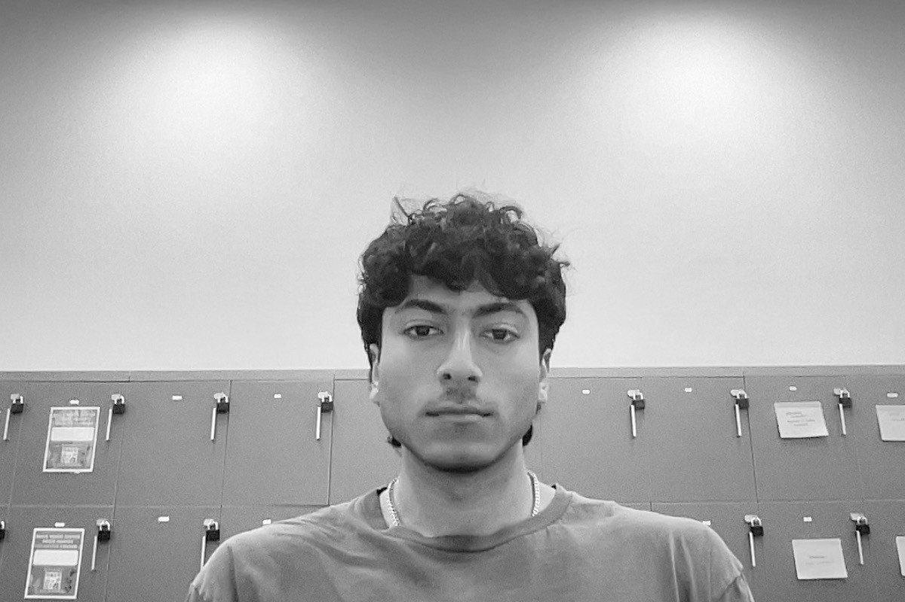
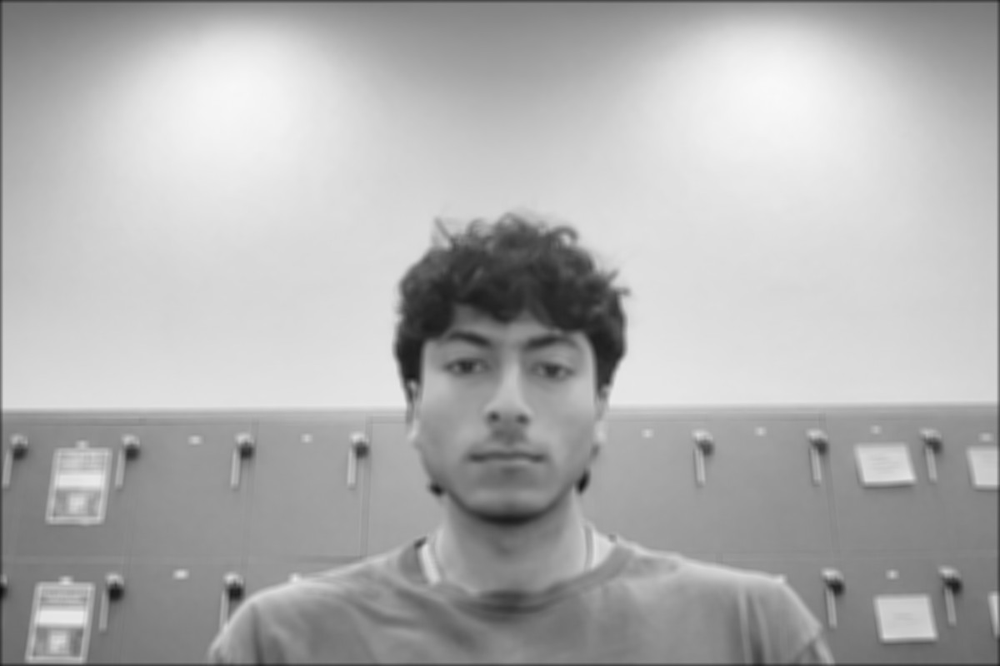
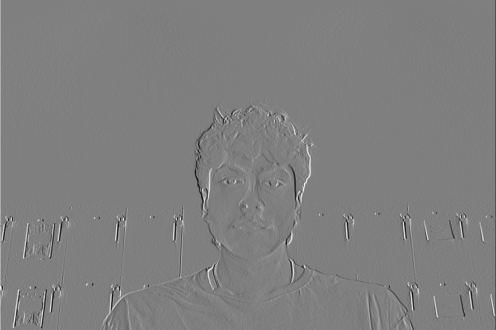
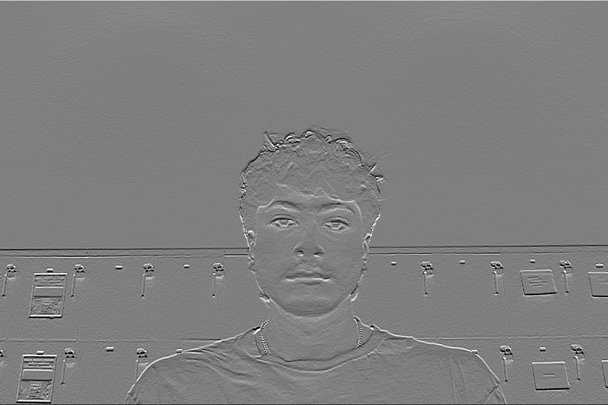
Both of my implementations match scipy.signal.convolve2d(img, kernel, mode="same")
for all three filters (np.allclose is true for each).
| Filter | Four loops | Two loops | scipy |
|---|---|---|---|
| 9 × 9 box | 23.53 s | 3.16 s | 0.155 s |
| D_x (1 × 3) | 1.17 s | 2.68 s | 0.011 s |
| D_y (3 × 1) | 1.38 s | 2.98 s | 0.021 s |
Timed on the full 800 × 1200 photo. Scipy is fastest by a wide margin, about 20×
faster than two loops and 150× faster than four loops on the box filter, because its loops
run in compiled C while mine run in Python, where every iteration carries interpreter overhead.
Collapsing the inner two loops into one NumPy call helps a lot for the box filter, where each call
does 81 multiply-adds at C speed. For the 3-element difference operators the two-loop version is
actually slower than four loops: there are only three multiplies per pixel, so the fixed
cost of slicing out a patch and calling np.sum for every pixel outweighs what it
saves.
Both implementations zero-pad, and convolve2d with mode="same"
defaults to boundary="fill" with fillvalue=0, which is exactly the same
thing. That is why the outputs agree. The cost of zero padding is visible near the borders: pixels
there are averaged with black, so the box-filtered image darkens slightly along its edges, and the
difference operators see a jump from the image to zero, which shows up as a false edge along the
border. Scipy can avoid this with boundary="symm" (mirror the edge pixels) or
boundary="wrap", and it also offers mode="full" and
mode="valid" for larger and smaller outputs.
From here on I use scipy.signal.convolve2d with mode="same". Convolving
the cameraman image with D_x and D_y gives the partial derivatives, and combining them gives the
gradient magnitude, which is large wherever the brightness changes quickly in any direction:
∂I/∂x = I * D_x ∂I/∂y = I * D_y |∇I| = sqrt( (∂I/∂x)² + (∂I/∂y)² )
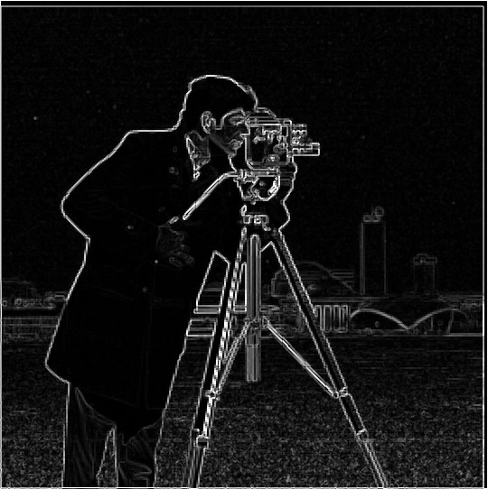
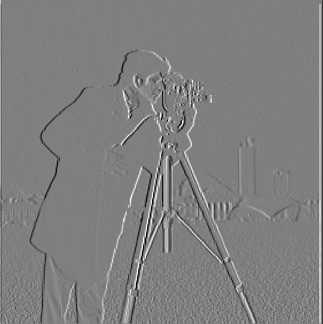
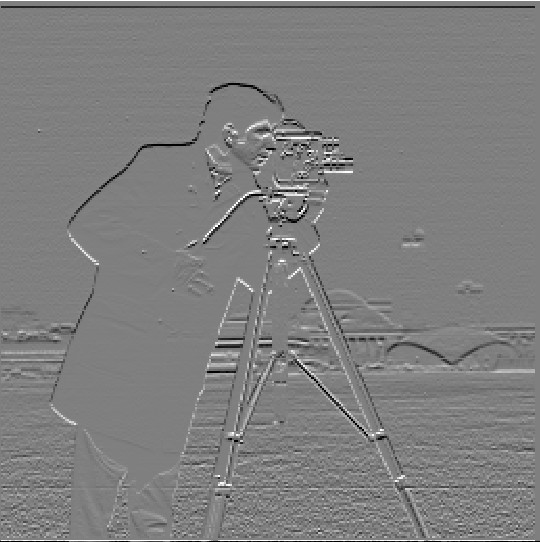
∂I/∂x lights up on vertical structures like the tripod legs and the man's back, and ∂I/∂y on horizontal ones like the horizon and the camera body. The gradient magnitude combines both into an orientation-free map of where edges are.
An edge image keeps the pixels whose gradient magnitude exceeds a threshold. The threshold trades off completeness against noise, and there is no value that gets both, because the grass in the lower half of the frame produces gradients about as strong as the fainter real edges.
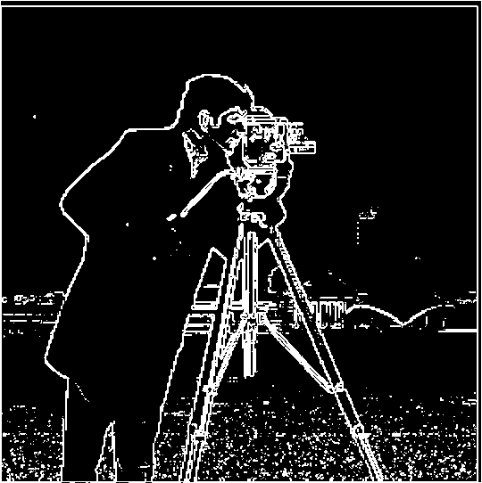
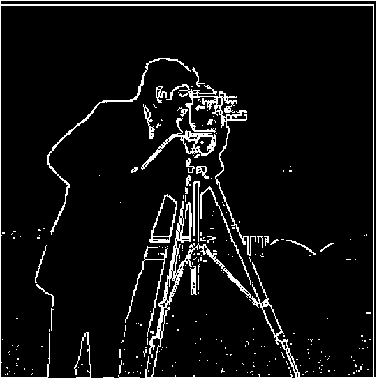
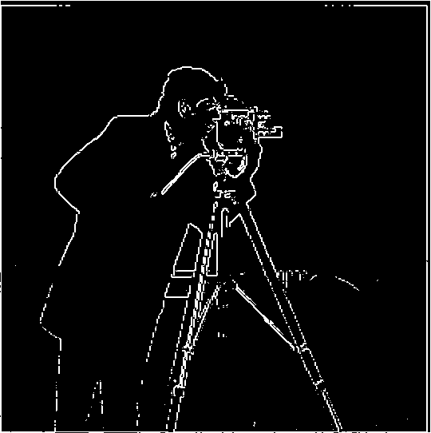
At 0.15 the grass fills the bottom of the frame with speckle. At 0.35 the noise is gone, but so are most of the buildings on the horizon, and the thin tripod legs start to break apart. I chose 0.24: the man, the camera and the full tripod survive, the buildings are still partly visible, and most of the grass is suppressed. The remaining specks in the grass are the price of keeping the fainter real edges, and that is the problem the next part addresses.
The thin rectangle around each edge image is not a filtering artifact. The provided
cameraman.png has a white frame a few pixels wide around the photo, and the jump from
white to the photo is a real, strong edge.
Finite differences respond to every pixel-to-pixel change, including noise. Smoothing first
fixes this. I build a 2D Gaussian from cv2.getGaussianKernel, which returns a 1D
Gaussian, and take the outer product with its transpose:
g_1d = cv2.getGaussianKernel(ksize=9, sigma=1.5) # 9x1
G = g_1d @ g_1d.T # 9x9Blurring the cameraman with G and then repeating Part 1.2 gives:
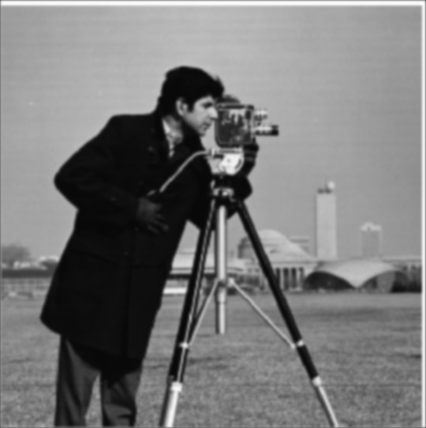
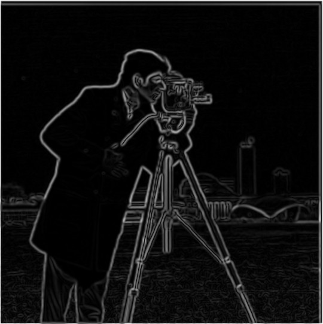
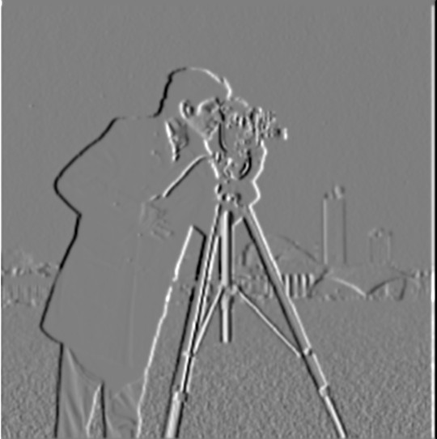
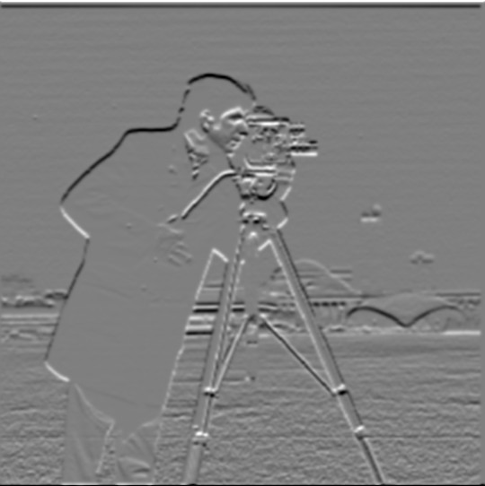
The grass noise is almost entirely gone. The blur averages each pixel with its neighborhood, so isolated pixel-to-pixel variations cancel out before the derivative ever sees them, while a real edge, which is consistent across its neighborhood, survives. The edges themselves are thicker, smoother and more continuous: the outline of the man and the tripod legs are closed curves instead of broken, jagged runs. Blurring also spreads each edge over several pixels, so the gradient magnitudes are smaller overall, and the threshold has to drop from 0.24 to 0.12 to catch the same structures. The cost is fine detail: the thinnest lines on the camera are softened, and the edges are less precisely localized.
Convolution is associative, so blurring and then differentiating can be folded into a single filter. Convolving the Gaussian with each difference operator gives the derivative of Gaussian filters:
(I * G) * D_x = I * (G * D_x) = I * DoG_x DoG_x = convolve2d(G, D_x, mode="full") 9 × 11 DoG_y = convolve2d(G, D_y, mode="full") 11 × 9
mode="full" keeps the whole filter. A 9-wide Gaussian
convolved with a 3-wide difference is 9 + 3 − 1 = 11 wide.
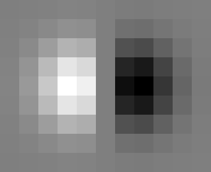
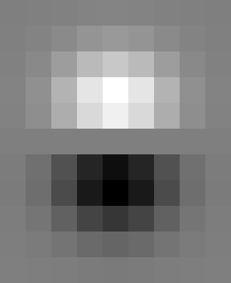
Each filter is the slope of the Gaussian bump along one axis: positive (white) on the side where the Gaussian rises, negative (black) where it falls, and zero (gray) through the peak. Applied to an image, DoG_x compares a weighted average of the pixels on one side with a weighted average on the other. A flat region cancels to zero, while a vertical edge makes the two averages differ. That comparison of neighborhoods rather than single pixels is why it ignores noise.
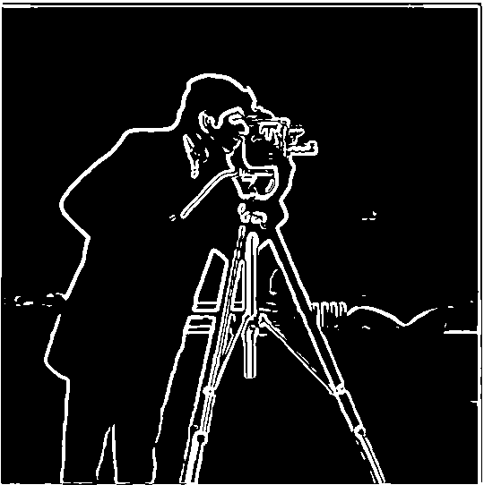
The two results are identical everywhere except the outermost row and column of pixels. Away from that 1-pixel border, the two gradient magnitudes differ by at most 1.1 × 10−15, which is floating-point rounding. On the border they differ by up to 0.37, and 68 of the edge pixels, all on the border, disagree. The border difference comes from the zero padding. In the two-step version the blurred image is cropped to the original size before D_x runs, so D_x sees zeros just outside the image. The single DoG convolution never makes that cut, so near the border it still sees the Gaussian-weighted image values that the two-step version threw away.
A Gaussian is a low-pass filter: blurring with it keeps the smooth, slowly varying part of an image and removes the fine detail. Subtracting that blur from the original leaves exactly what the blur removed, the high frequencies: edges, texture and fine detail. An image looks sharper when those are stronger, so unsharp masking adds a scaled copy of them back:
blurred = f * G detail = f - f * G sharpened = f + α (f - f * G)α sets how much extra detail is added. α = 0 returns the original.
All three steps collapse into one convolution. Let e be the unit impulse, a kernel of
zeros with a single 1 in the center, so that f * e = f. Writing every f as
f * e lets the image be factored out:
f + α (f - f * G) = (1 + α)(f * e) - α (f * G) = f * ( (1 + α) e - α G )The unsharp mask filter is
(1 + α) e - α G: a boosted center spike
minus a scaled Gaussian. Its weights sum to (1 + α) − α = 1, so flat regions keep their
brightness and only places where the brightness changes get amplified.
def unsharp_mask_filter(G, alpha):
e = np.zeros_like(G)
e[G.shape[0] // 2, G.shape[1] // 2] = 1 # unit impulse
return (1 + alpha) * e - alpha * GI use the same 9 × 9, σ = 1.5 Gaussian as in Part 1.3 and α = 2, and convolve each RGB channel separately. Results are clipped to [0, 1], since sharpening pushes some values slightly outside that range. The high-frequency panels are shifted by 0.5 so that zero shows as gray.
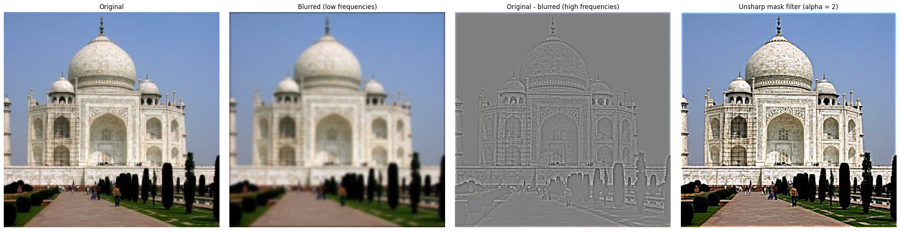
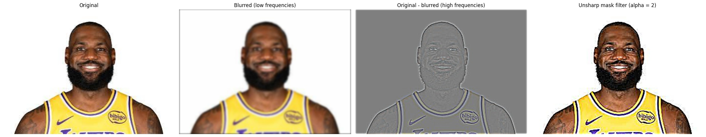
On the Taj Mahal, the marble inlay on the dome, the window grilles and the edges of the cypress trees all become noticeably crisper. On LeBron, the beard texture, the eyes and the jersey lettering sharpen the most, since those are where the high-frequency panel is strongest.
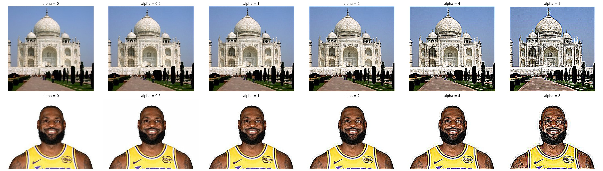
Up to about α = 2 the added detail reads as genuine sharpness. Past that the filter overshoots: at α = 4 bright and dark halos appear along strong edges, and at α = 8 the sky over the Taj turns grainy and LeBron's skin looks gritty and over-contrasted. Unsharp masking cannot tell detail from noise, so a large α amplifies both.
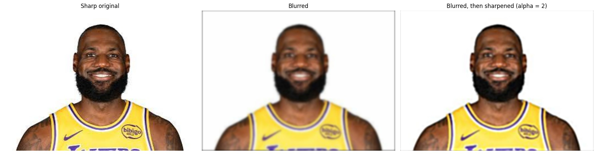
Sharpening brings back the large edges: the outline of the head and shoulders, the jersey trim and the swoosh look crisp again. The fine detail does not come back. The individual hairs in the beard, the skin texture and the small "bibigo" lettering stay soft, and the face looks flatter than the original. The blur removed most of the high frequencies and wiped out the finest ones almost completely, and unsharp masking can only amplify frequencies that are still present. Detail the blur only weakened gets boosted back; detail it erased stays gone. Sharpening makes an image look sharper, but it is not the inverse of blurring.
A hybrid image puts one picture in the high frequencies and another in the low frequencies. Up close, fine detail dominates perception, so you see the high-frequency image. From farther away, or when the image is small, that detail is too fine to resolve and only the low-frequency image is left (Oliva, Torralba and Schyns, 2006). The first step is alignment: I use the provided starter code, clicking the two eyes in each image so the faces line up in position, scale and rotation. Then:
def gaussian_kernel(sigma):
ksize = int(6 * sigma) | 1 # odd size covering about +-3 sigma
g = cv2.getGaussianKernel(ksize, sigma)
return g @ g.T
def hybrid_image(im1, im2, sigma1, sigma2):
"""High frequencies of im1 plus low frequencies of im2."""
high = im1 - convolve_color(im1, gaussian_kernel(sigma1)) # impulse minus Gaussian
low = convolve_color(im2, gaussian_kernel(sigma2)) # Gaussian
return np.clip(high + low, 0, 1)Each σ sets a cutoff frequency of roughly fc ≈ 1 / (2πσ) cycles per pixel. The high-pass keeps what lies above its cutoff and the low-pass keeps what lies below its cutoff, so a larger σ1 keeps more of the high-frequency image, while a larger σ2 keeps less of the low-frequency one.
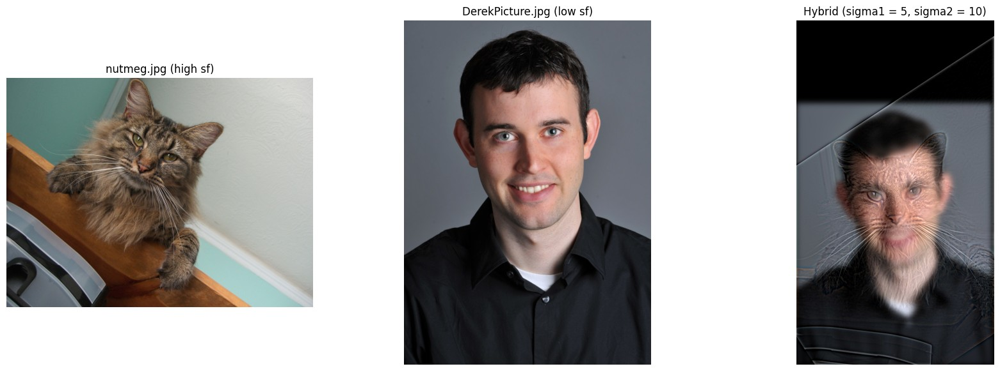
I made Nutmeg the high-frequency image. The other way around, Derek's face dominated at every distance and the cat disappeared, because a smooth face has little fine detail to contribute while fur and whiskers are almost entirely high frequency. Up close you see the cat's eyes, fur and whiskers; from a distance, Derek.
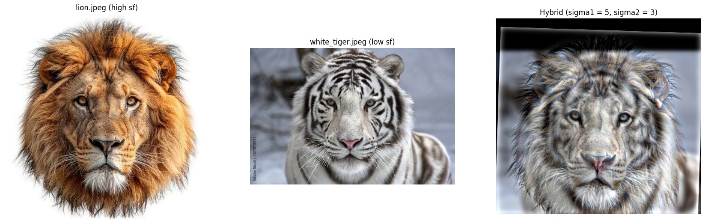
Up close the lion's mane, whiskers and eyes carry the image; from a distance the pale coloring and dark stripe pattern of the white tiger take over.
Originals and alignment. My photo is the high-frequency image and LeBron is the low-frequency one. The starter code recenters, rescales and crops both so the clicked eye points coincide, which is where the black band at the top of the aligned images comes from.
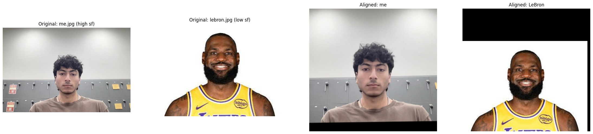
Fourier transforms of the inputs. Log magnitude of the 2D Fourier transform, shifted so the lowest frequencies are in the center. Both photos have energy at every frequency, concentrated near the center, with bright horizontal and vertical lines from strong edges and the image borders.
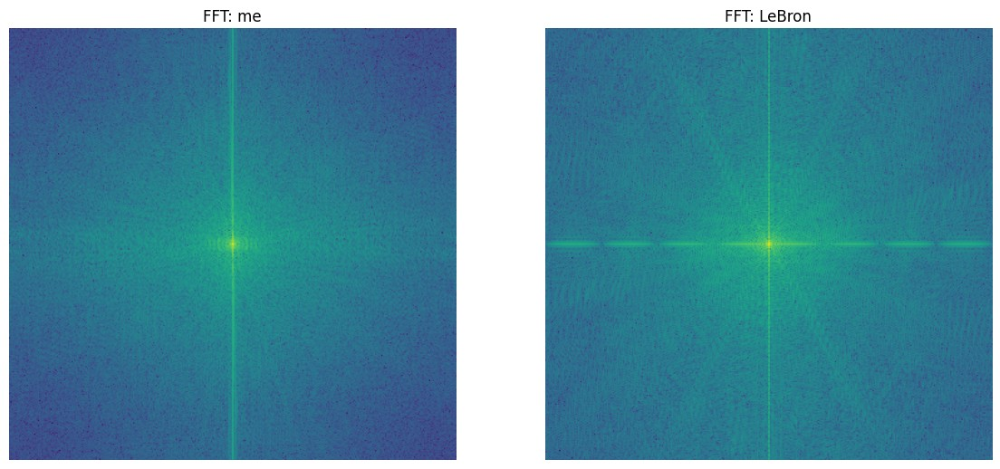
Choosing the cutoffs. I tried every combination of σ1 ∈ {2, 4, 6} and σ2 ∈ {3, 5, 7}:
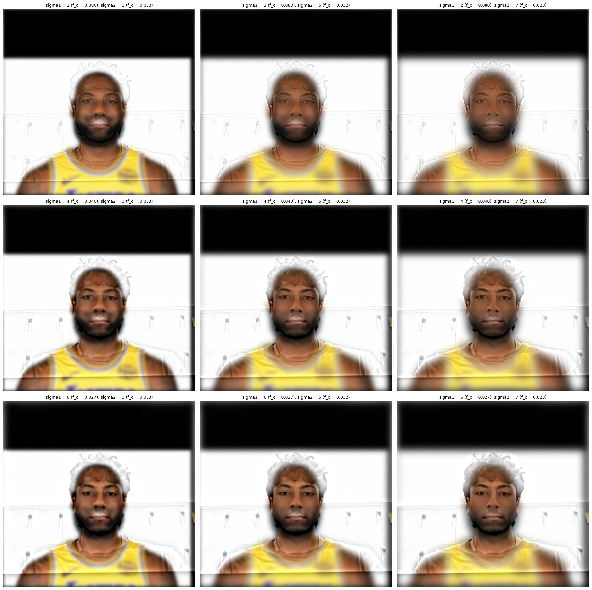
Moving down the grid (larger σ1) my face takes over more and more of the image, until LeBron's features are barely visible even up close. Moving right (larger σ2) LeBron dissolves into a blur and loses his beard and smile, which are what make him recognizable from a distance. I chose σ1 = 2 (fc ≈ 0.080) and σ2 = 3 (fc ≈ 0.053), the top-left combination. My photo keeps only frequencies above 0.080 and LeBron's keeps only frequencies below 0.053, so the two bands don't overlap: my eyes, hair and outline sit in the fine detail, while LeBron's beard, jersey and overall shape sit in the coarse structure.
Filtered results. The high-pass of my photo is shifted so zero shows as gray. Its Fourier transform has the bright center removed, with energy spread outward toward high frequencies. The low-pass of LeBron keeps only a small bright center; everything farther out is dark.
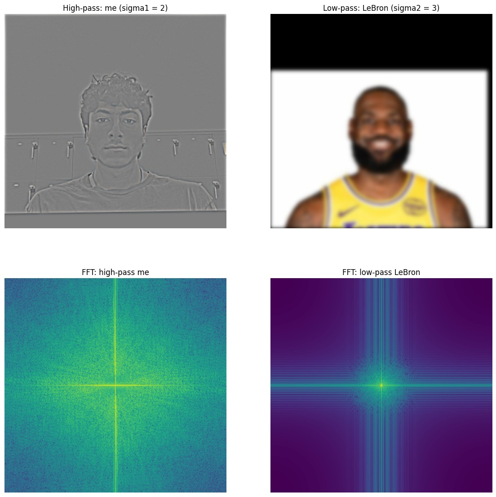
Final hybrid. Its Fourier transform is the sum of the two: LeBron's bright low-frequency center plus my high-frequency energy around it.
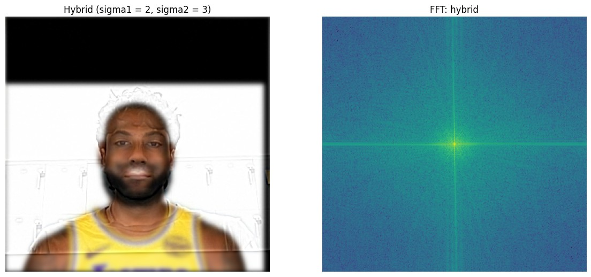
A stack is a pyramid without the downsampling: every level stays the size of the original. The Gaussian stack starts with the image and blurs the previous level again at each step. The Laplacian stack stores the difference between consecutive Gaussian levels, which is the band of detail each blur removed, and its last level is the final Gaussian level, so adding up every Laplacian level gives back the original image exactly.
G0 = I Gi+1 = Gi * gσ Li = Gi - Gi+1 for i < n-1 Ln-1 = Gn-1 Σ Li = I
def gaussian_stack(im, levels, sigma):
"""Level 0 is the image; each next level is the previous one blurred again (no downsampling)."""
G = gaussian_kernel(sigma)
stack = [im]
for _ in range(levels - 1):
stack.append(convolve_color(stack[-1], G))
return np.array(stack)
def laplacian_stack(im, levels, sigma):
"""L_i = G_i - G_{i+1}; the last level is the last Gaussian level, so the levels sum to im."""
g = gaussian_stack(im, levels, sigma)
return np.concatenate([g[:-1] - g[1:], g[-1:]])I use 5 levels with σ = 4 and no built-in pyramid functions. The Laplacian levels are displayed with zero as mid-gray; the last one is the low-frequency residual and is shown as a normal image.
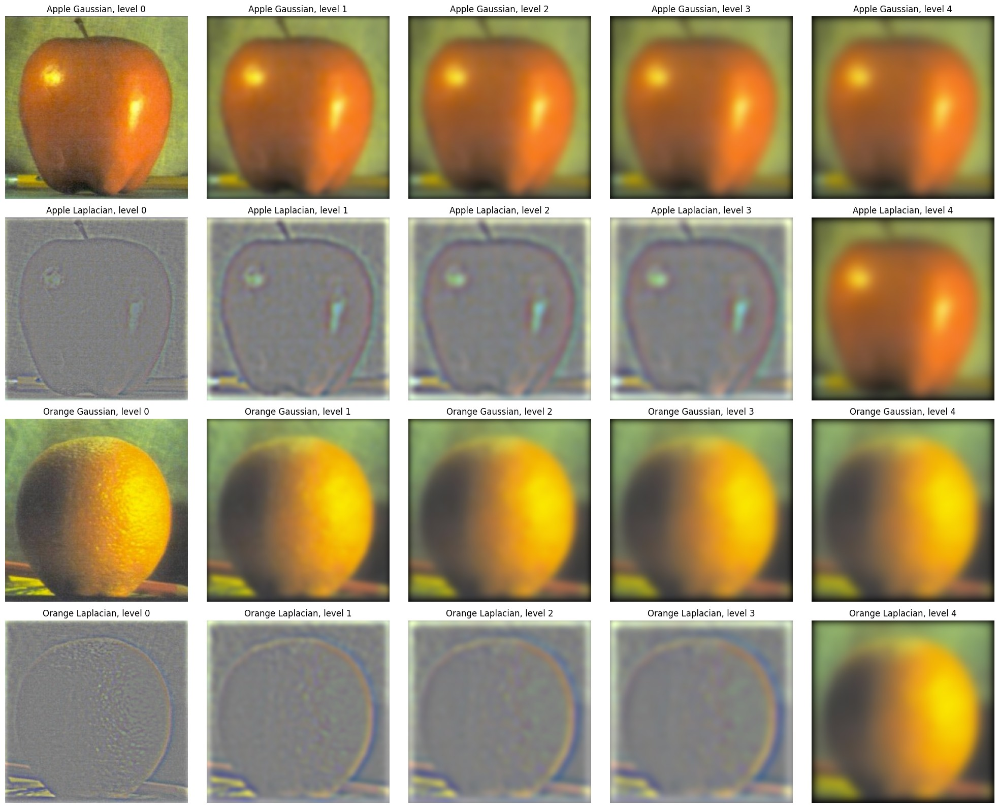
Level 0 of each Laplacian stack holds the finest texture, like the dimpled skin of the orange, and later levels hold progressively broader structures such as the fruit outlines and the highlights. The light frames around the deeper levels come from zero padding: repeated blurring pulls in black from outside the image, so the border darkens a little more at every level.
Blurring repeatedly with the same σ grows the effective blur as σ√n rather than doubling it like a pyramid does, so the stack's coarse levels are less blurry than a pyramid's would be. A fairly large σ compensates for that.
Szeliski's Figure 3.42 shows the Laplacian levels of the apple and the orange, each masked by the Gaussian stack of a left/right step mask, and their combination. Rows (a)–(i) are levels 0, 2 and 4, and the bottom row (j)–(l) is each column's levels summed back together.
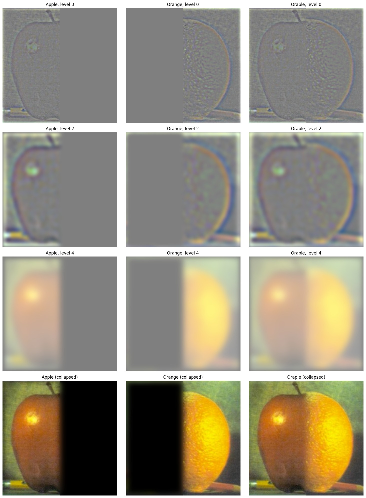
Cutting two images along a seam and blurring the cut doesn't work with a single transition width. A narrow transition leaves broad differences in color and brightness changing abruptly; a wide one overlaps fine texture from both images and produces ghosting. Burt and Adelson's answer (1983) is to blend each frequency band separately, with a transition width that matches the size of the features in that band.
The mask provides this. It is 1 where the first image should appear and 0 where the second should, and it gets its own Gaussian stack. At level 0 the mask is still sharp, so the finest detail switches from one image to the other almost immediately. At each deeper level the mask is blurrier, so coarser structure fades over a wider band. Each level is blended with its own mask level, and the blended levels are summed:
Bi = Mi · Li(A) + (1 - Mi) · Li(B) result = Σ BiMi is level i of the mask's Gaussian stack; Li(A) and Li(B) are level i of the two images' Laplacian stacks.
def multires_blend(im1, im2, mask, levels, sigma):
"""Blend im1 (where mask = 1) with im2 (where mask = 0), one Laplacian level at a time."""
mask_g = gaussian_stack(mask, levels, sigma)
im1_part = mask_g * laplacian_stack(im1, levels, sigma)
im2_part = (1 - mask_g) * laplacian_stack(im2, levels, sigma)
blended = np.clip((im1_part + im2_part).sum(axis=0), 0, 1)
return blended, im1_part, im2_partThe oraple is panel (l) of the figure above: a vertical step mask, and the seam down the middle is invisible. The apple's texture meets the orange's dimpled skin in a narrow band while the overall red-to-orange color shifts gradually across a much wider one.
An irregular mask works the same way, because the Gaussian blur is circular and softens whatever edge the mask has. I scaled Humpty Dumpty to 60% and placed him so his face sits where the sun's disc was, then used an oval mask around him (8 levels, σ = 6). The sun's rays now radiate out from Humpty, and the oval's edge fades into the glow with no hard boundary.
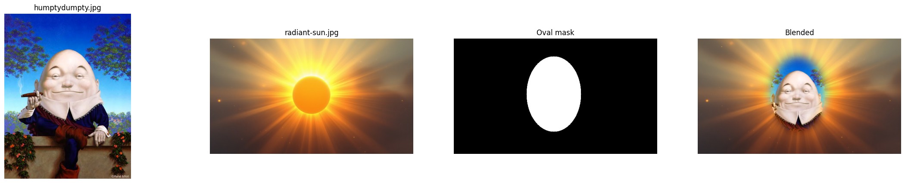
A smaller oval replaces Jesus's face in Leonardo's Last Supper with KSI's. KSI is scaled so an oval around his face matches the size of an oval over Jesus's face, and pasted so their centers line up. The mask is small, so this blend uses 6 levels and a smaller σ = 2; the σ that worked for Humpty would blur his face away.
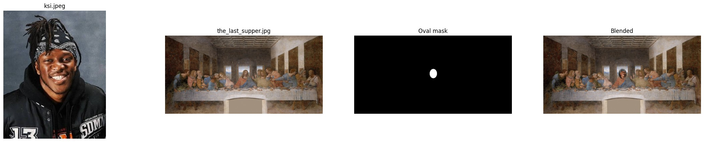
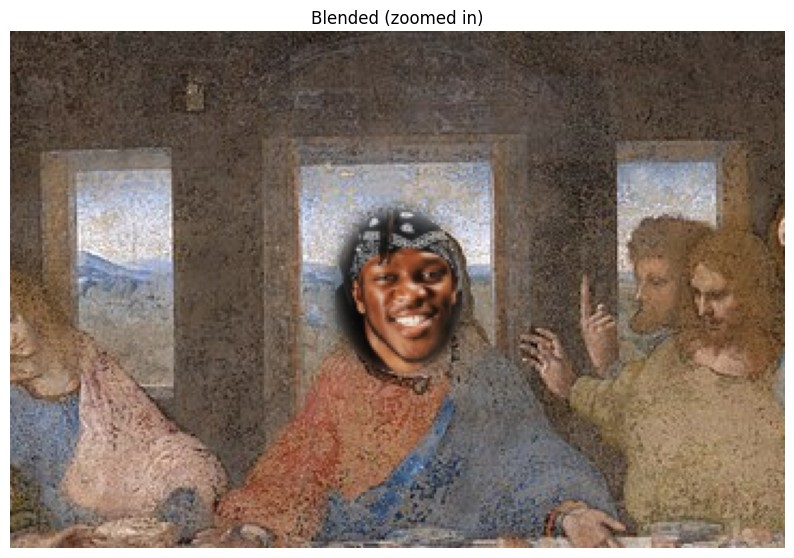
The masked Laplacian levels of each image and their combination, at levels 0, 2, 4 and 7, then each stack summed. The masked Humpty has a crisp oval edge at level 0 and an increasingly wide, soft one at deeper levels, and the masked sun has a matching hole. Adding the two leaves no gap and no overlap at any level, which is why the collapsed result has no visible seam.
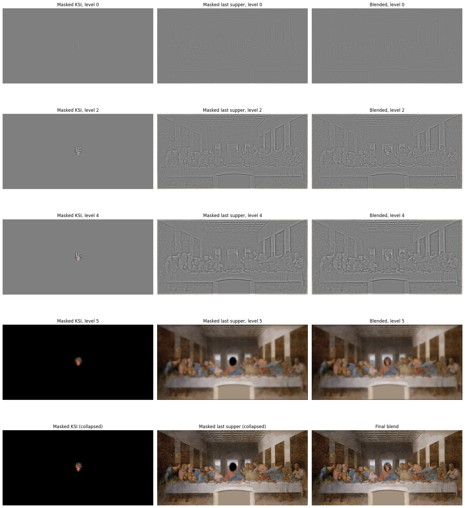
The most important thing I learned is that blending two images is really a frequency problem, not a pixel problem. My first instinct for joining the apple and the orange was to find the right amount of blur for the seam, but there is no right amount: a narrow seam leaves the color jump visible, and a wide one ghosts the texture. The fix is to stop treating the image as one thing. Once it is split into frequency bands, each band gets the seam that suits it, sharp for fine texture and gradual for broad color, and the seam disappears. Hybrid images turned out to be the same idea pointed the other way: instead of hiding a boundary between two images, they separate them by frequency and let viewing distance decide which one you see. In both cases the hard part was never the pixels. It was deciding which frequencies belong to which image.